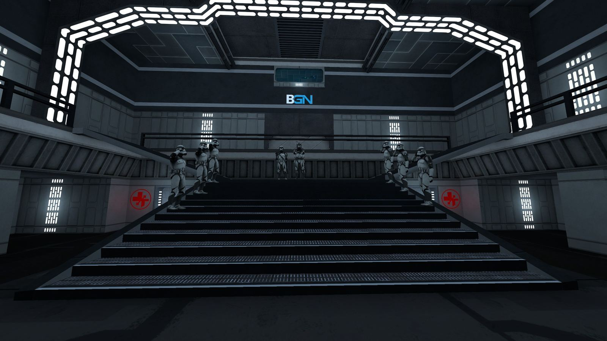

01 / EINSATZ
WILLKOMMEN IM IMPERIUM
DEIN NÄCHSTER
EINSATZ
BEGINNT HIER.
Die Verbindung wird vorbereitet. Währenddessen erhältst du Einblicke in die Einheiten und Schauplätze des Servers.
SERVERAufbau des Imperiums
KARTEWird ermittelt
SPIELMODUSStar Wars Roleplay
IMPRESSIONEN VOM SERVER01 / 13

ORTE · EINHEITEN · GESCHICHTENBILDER WECHSELN AUTOMATISCH